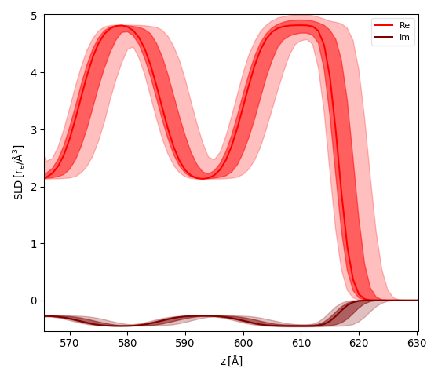
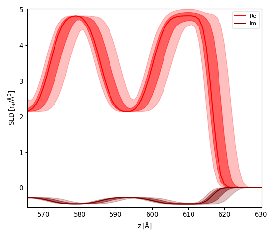
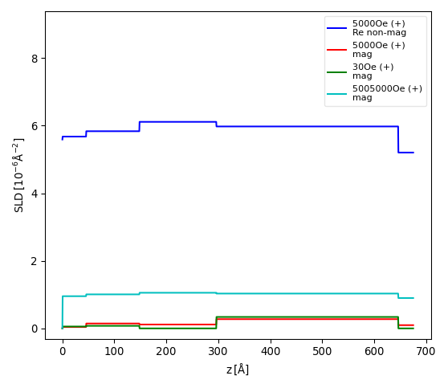

The SLD graph¶
The Reflectivity and SimpleReflectivity plugins add a graph to display the sample profile as height
from substrate vs. scattering length density (SLD) to the user interface. There are several curves
when the model is based on more then one physical propserty (real and imaginary as well as magnetic parts).
SLD uncertainty¶
With the Reflectivity plugin the SLD profile can also be used to visualize the parameter uncertainties from
a fit. While this results in an intuitive display of real-space geometry one has to keep in mind that
reflectometry does not measure the geometry directly but correlations between interfaces and the results are thus
translation invariant.
The user will therefore have to choose a reference interface that is kept fixed for this modeling.
After fitting the model and caluculating the errors on parameters (see Error Statistics from bumps library) activate the menu . A dialog will ask to enter the reference interface (python style index 0=Substrate, -1=Surface) and the number of samples. GenX will then simulate your model while choosing number of samples random parameter sets choosen from a gaussian distribution. The SLD will be calculated for the reference interface at z=0 and the SLD plot will show the fit result (line) together with two bands of uncertainty as partially transparent curves. The stronger curve is the 1-sigma (68.2%) and the more transparent the 2-sigma (95%) interval.
The pictures below show the result for the x-ray reflectivity example close to the sample surface using a reference surface of -1 (left) and 0 (right):
 

{kind=link}
Custom filter¶
If the buildin options to display the profiles do not fit your needs you can modify the displayed
datasets and components within the model script.
The recent reflectivity model Sim function will start like this:
SLD = []
def Sim(data):
I = []
SLD[:] = []
# BEGIN Dataset 0 DO NOT CHANGE
d = data[0]
I.append(sample.SimSpecular(d.x, inst))
if _sim: SLD.append(sample.SimSLD(None, None, inst))
# END Dataset 0
If the model ist simulated (not fit) the _sim variable will be set to True resulting in the global list SLD
to be populated. It will have one entry for each dataset in the model.
Each entry (retuned by sample.SimSLD) is a dictionary containting each of the SLD lines as well as the z-values
and the SLD unit.
The dictionary keys are used in the plot legend, so you can see in the graph which items carry the information that
is relevant.
To remove certain datasets or SLD lines from the graph, add a filter at the end of the Sim function:
if _sim:
for i in [1,3,5]:
SLD[i]={}
for i in [2,4]:
del(SLD[i]['Re non-mag'])
The example above is taken from a neutron reflectivity fit of 6 datasets, with even numbers being spin-up and odd numbers spin-down. The first for-loop removes any lines from the spin-down channels, as the model does not change between these datasets. The second for-loop removes the non-magnetic SLD part for dataset 2 and 4. The resulting graph is shown below:
{kind=link}
Note
This user filtering is not supported by the SLD export facility that expects all information for each of the datasets. Before exproting SLD you should thus comment out this section and simulate the data again.